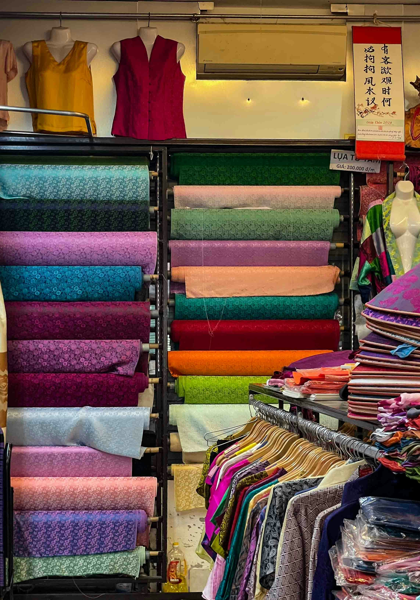
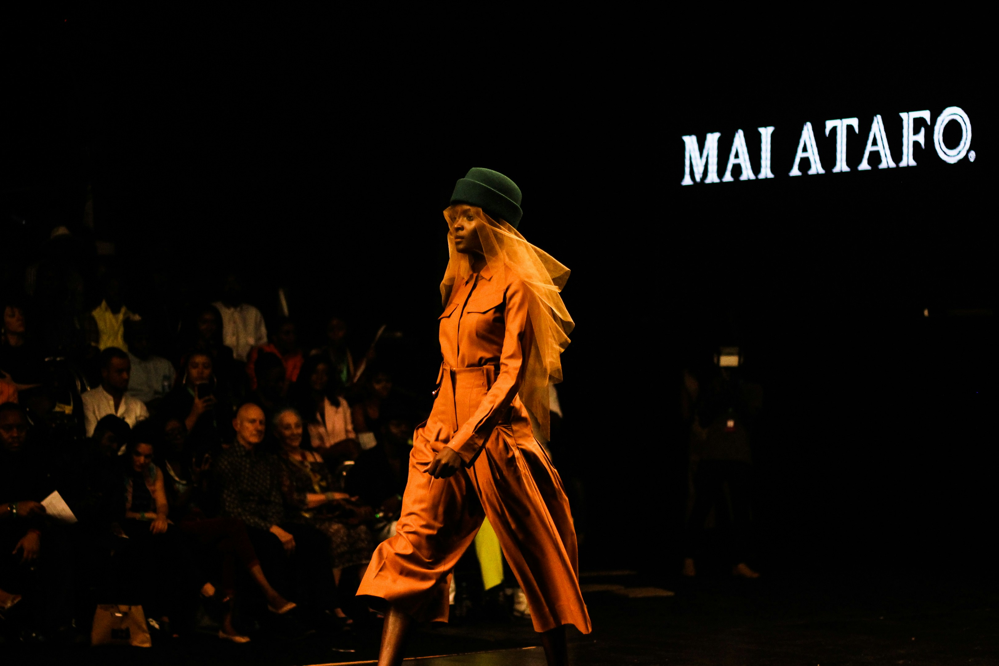

Sixth Sense Runway
A bold runway experience showcasing our latest street-luxury collection with live music and creative performances.
A bold runway experience showcasing our latest street-luxury collection with live music and creative performances.

An exclusive behind-the-scenes session highlighting the creative process, styling, and production of Sixth Sense pieces.

A pop-up fashion and culture event celebrating streetwear, music, and community through immersive brand experiences.

A curated editorial shoot blending high fashion and street culture, capturing the visual identity of Sixth Sense for future campaigns and publications.